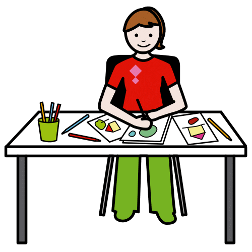
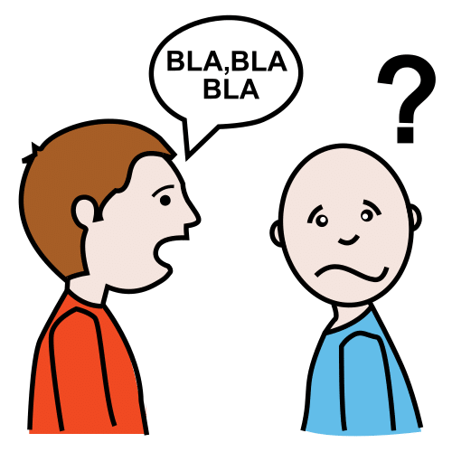
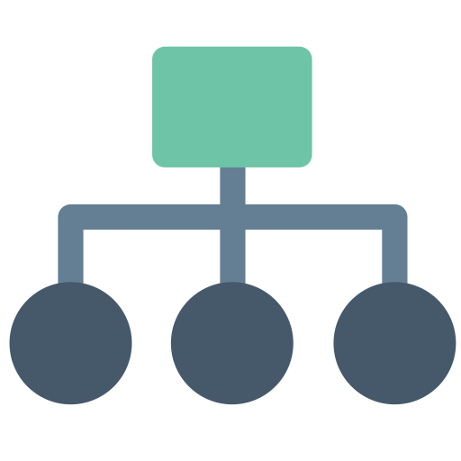
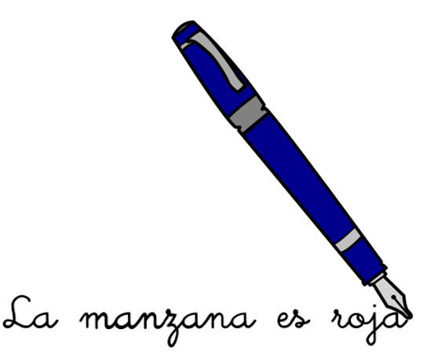

Su afirmación fue totalmente cierta. Nos dijo la verdad.
Artística
 Definición:
Habilidades relacionadas con el arte, como la pintura, el dibujo o la escultura.
Ejemplo:
Mayte tiene una gran habilidad artística, hace unos dibujos preciosos.
Coherencia
 Definición:
Relación entre una cosa y otra. Cuando algo no tiene coherencia, puede resultar difícil de comprender.
Ejemplo:
Antonio: “Mi no si lo es también en rojo”.
Inma: “Antonio, lo que estás diciendo no tiene coherencia”.
Creatividad
Definición:
Capacidad de pensar o hacer las cosas de forma diferente a la mayoría de las personas.
Ejemplo:
Mi hermano dibuja con creatividad.
Desahogarte
Definición:
Dar rienda suelta a un sentimiento, queja o confidencia para aliviarse de ellos.
Ejemplo:
Ana, necesito desahogarme y voy a contártelo todo.
Estructura
 Definición:
Distribución y orden de las partes importantes que componen o forman algo.
Ejemplo:
Ha escrito un cuento con una estructura perfecta.
Personal
Definición:
Algo que es propiedad de una persona.
Ejemplo:
Ese es el ordenador personal de Javier.
Secundario
Definición:
Algo que no es lo principal o lo más importante.
Ejemplo:
Ganar es secundario, lo importante es participar.
1. Las funciones de un diario
Los textos que has ido viendo y leyendo son fragmentos de diarios de otros niños y niñas como tú. Un diario personal es un cuaderno o libreta en el que escribes sobre ti mismo y misma.
Los diarios personales tienen muchas funciones diferentes.
En primer lugar, en tu diario puedes poner por escrito los hechos más importantes que te ocurran, tus sentimientos, pensamientos, ideas, sueños… Es una especie de diálogo contigo mismo, en el que reflejas lo que te ha ocurrido y cómo te has sentido. Es algo que puedes hacer todos los días o de vez en cuando. Además, te servirá para que no se te olvide nada.
Además, es útil para que te conozcas mejor y para desahogarte expresando lo que sientes y piensas. Permite que te des cuenta de las cosas que te han pasado, que reflexiones sobre lo ocurrido y ordenes tus ideas y emociones.
También tiene otras funciones secundarias, como mejorar la escritura, la ortografía, crear rutinas saludables, fortalecer la memoria, aumentar el vocabulario, mejorar la caligrafía, las habilidades artísticas, etcétera.
A continuación, puedes ver y recordar algunos de los diarios que vimos en ejercicios y fases anteriores ¿Te acuerdas de ellos? Puedes descargar el PDF desde el siguiente enlace:
Máximo ha tenido muchas faltas de ortografía en su trabajo
Definición:
Costumbre de hacer las cosas de una forma y sin pensar.
Ejemplo:
Mi hermano tiene la rutina de hacer la cama todos los días antes de ir al colegio.
Definición:
Que es bueno para la salud.
Ejemplo:
Dormir bien, hacer ejercicio y comer fruta son acciones saludables.
Definición:
Capacidad de recordar datos y hechos pasados
Ejemplo:
Mi hermano tiene muy buena memoria con las citas y las fechas.
Definición:
Conjunto de palabras de una lengua que una persona conoce y usa.
Ejemplo:
Mi hermanito ya sabe mucho vocabulario.
 Definición:
Características de la escritura de una persona.
Ejemplo:
Olivia tiene muy buena caligrafía, su letra es preciosa, limpia y ordenada.
Definición:
Habilidades relacionadas con el arte, como la pintura, el dibujo o la escultura.
Ejemplo:
Mayte tiene una gran habilidad artística, hace unos dibujos preciosos.
2. Un diario, múltiples funciones
Ahora es el momento de demostrar todo lo que has aprendido sobre las funciones del diario personal. Encontrarás varias actividades diferentes, elige la opción que mejor se adapte a ti.
Lectura facilitada
Tú has aprendido mucho
Tú conoces las funciones del diario.
Tú tienes que demostrar lo aprendido.
Tú vas a hacer una actividad
Tú vas a trabajar solo.
Tú tienes que elegir una opción.
Opción A. En busca del diario verdadero
En esta actividad encontrarás diferentes afirmaciones sobre el diario personal. Algunas de ellas serán verdaderas y otras falsas ¿Podrás identificarlas correctamente?
Definición:
Expresión que indica que una cosa es cierta.
Ejemplo:
Su afirmación fue totalmente cierta. Nos dijo la verdad.
Opción B. Comprendiendo este diario
Opción C. ¿Para qué es este diario?
Opción D. El diario de Jesús
En esta actividad deberás completar el diario de Jesús, que se ha manchado y emborronado con la lluvia. No te olvides de las funciones que debe tener un diario.
Estaba en el colegio jugando con Ana y Rayan cuando nos hemos encontrado…
Nunca me había pasado nada igual. Al principio me he sentido un poco....
Por suerte, al final no ha pasado nada grave y he aprendido que cuando...
Puedes hacerlo en tu cuaderno o utilizar la siguiente plantilla.
¿No sabes qué contar a tu diario? Si crees que este fin de semana no te ha ocurrido nada muy importante, recuerda que en un diario también puedes escribir sobre tus pensamientos, ideas, sueños o sentimientos.
 Definición:
Definición: Definición:
Definición: Definición:
Definición:


 Definición:
Definición: Definición:
Definición: Definición:
Definición: Definición:
Definición: Definición:
Definición: